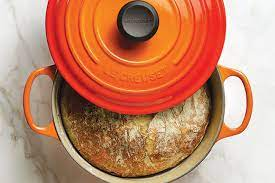

Dutch Oven Bread

Beautiful flour-dusted crust exterior with a fluffy, soft inside
This is a super easy, beginner friendly bread thats great to try out on a cool fall day
or to compliment any soup or stew!
With just a single hour to proof and only 4 ingredients, here is a bread recipe you won't need to plan days in advance!
Ingredients
- 3 cups bread flour
- 1 packet of activated dry yeast, 2 1/4 tsp
- 1 1/2 tsp salt
- 1 1/2 cups warm water
- Thats it!
Directions
- Combine all ingredients in a mixing bowl, stir with a fork until a rough dough forms.
- Knead with your hands on a lightly floured surface until a smooth dough forms, then return dough to a lightly oiled bowl.
- Cover the bowel with a slightly damp towel and place somewhere warm and free from drafts for 45 minutes to an hour, until dough doubles in size.
- During the last 10 minutes of proofing, place your dutch oven with the lid in the oven and pre-heat to 425F.
- Once dough has doubled in size, punch it down and knead a few more times.
- Very carefully remove your dutch oven from the hot oven and line with parchment paper, sprinking a little flour on the top and bottom of the dough then place in the dutch oven to cook!
- Replace the lid, then return the dutch oven to the oven to cook with the lid on for 35 minutes, then 10 more with the lid removed.
- Carefully take your dutch oven out, and remove your bread from the dutch oven. Let cool for 5-10 minutes and enjoy!
Back to Home